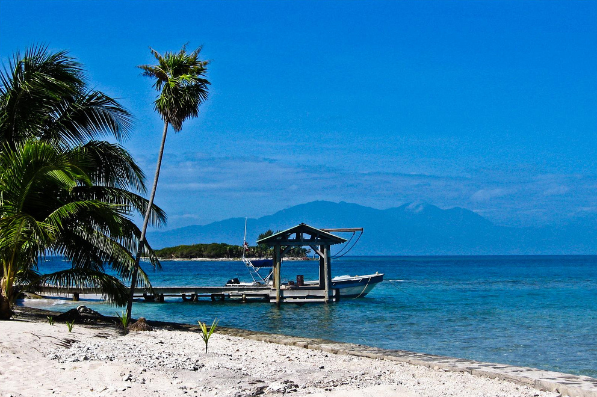

Welcome to La Ceiba
La Ceiba is a city in Honduras. It is next to the Caribbean Sea. It has beautiful beaches, nature, and friendly people.

About La Ceiba
La Ceiba is a city in Honduras. It is next to the Caribbean Sea. La Ceiba is known for its beaches, nature, and friendly people.
Visitors can enjoy the beach, eat local food, and explore the city.
Things to Do
- Relax on the beach and enjoy the warm sunshine
- Explore local restaurants serving traditional Honduran dishes
- Visit nearby coastal attractions and scenic spots
- Enjoy the relaxed island atmosphere and friendly local culture
Plan Your Visit
A trip to La Ceiba is a good way to enjoy the Caribbean. It has warm weather, beautiful views, and friendly people. You can relax, enjoy the beach, and explore the city.
For more information, visit Honduras Tips to learn more about the region.